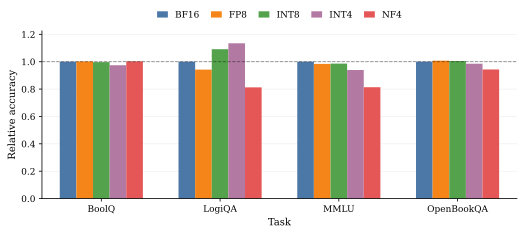
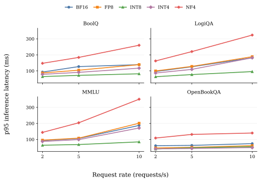
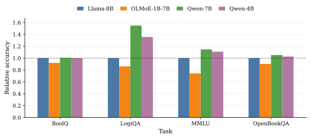
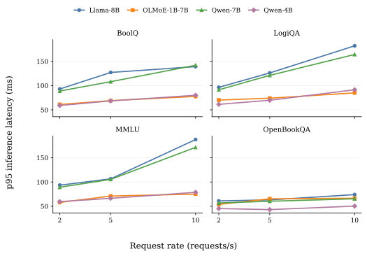
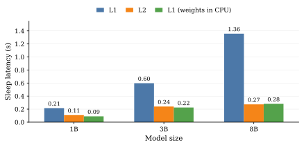
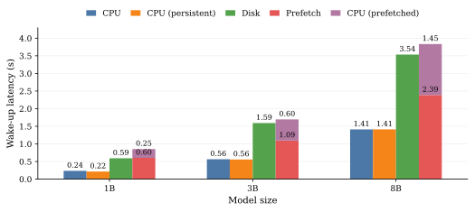
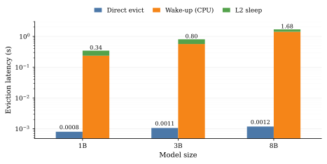
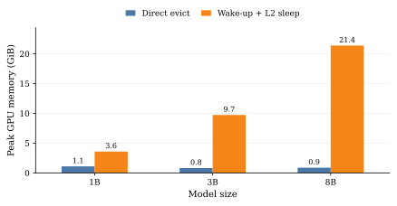

Master's thesis / TU Berlin / 2026
Kairos.
Workload-aware and reconfigurable LLM serving.
Problem and goal
Different models and their quantized variants offer different trade-offs between accuracy, latency, and memory consumption. Models with fewer parameters or lower numerical precision may reduce latency and GPU memory pressure, but can also affect output quality. In the standard setup of serving systems such as vLLM, SGLang, and TensorRT-LLM, the model and its hardware placement are configured ahead of time. These systems support limited forms of adaptation during serving but do not automatically select alternative models based on accuracy and latency objectives. However, request workloads, serving objectives, and resource pressure may change during runtime.
A serving system should therefore determine which model should answer requests given accuracy and latency constraints, where model weights should reside, and when adaptation should take place while minimizing interference with ongoing serving.
The system
Built on an extended vLLM runtime, Kairos continuously samples the live request stream, evaluates candidate models on observed workload data, and uses the resulting statistics to adapt the serving configuration at runtime. It can switch the actively serving model, move model weights between GPU memory, host memory, and disk, and delay disruptive reconfiguration commands until forecast idle windows on the GPU.
Motivating benchmarks
To motivate Kairos, we first examine whether quantized variants of the base model and smaller independent models can reduce inference latency while satisfying the accuracy constraint. We evaluate each model independently of the full Kairos system, measuring accuracy relative to the base model and inference latency under different request rates. These benchmarks establish whether runtime model selection has useful alternatives to choose from.
Quantization

The first plot shows the accuracy of quantized Llama-3.1-8B-Instruct variants relative to the BF16 baseline across different tasks. FP8 and INT8 quantization preserve accuracy or even exceed the baseline in these benchmarks. The INT4 variant also outperforms the baseline on LogiQA.

The next plot compares inference latency across request rates of 2, 5, and 10 requests per second. INT8 and INT4 quantization reduce latency, with INT8 performing consistently better under higher load. FP8 offers limited improvement on the GPU used in these experiments, while NF4 has the highest latency despite its smaller memory footprint.
Independent models

The next plot compares independent models against the Llama-3.1-8B-Instruct baseline. Despite having only 7B and 4B parameters, the Qwen models outperform the 8B baseline on several tasks. OLMoE, a mixture-of-experts model with 7B total but only 1B active parameters, performs worse across all evaluated tasks, suggesting that this reduction in active parameters is too aggressive to preserve accuracy here.

The next plot compares inference latency for the independent models. Qwen-7B is generally slightly faster than the Llama-8B baseline, while Qwen-4B achieves substantially lower latency. OLMoE also provides low latency through its sparse execution with only 1B active parameters. Combined with the accuracy results, Qwen-4B offers a particularly promising alternative, improving both accuracy and latency over the baseline.
Design principles
Kairos follows three design principles that guide its architecture and approach to workload-aware and reconfigurable serving.
P1 — Continuous monitoring
The system continuously samples incoming requests to compare candidate models against accuracy and latency objectives on the observed workload. This monitoring helps detect changes in workload characteristics and provides the information needed to adapt model selection and placement.
P2 — Runtime reconfigurability
The serving configuration should remain adaptable during operation. Guided by monitoring results, the system should support controlled changes to model selection and placement while continuing to serve requests, responding to changing workloads, objective violations, or resource constraints.
P3 — Interference-aware scheduling
Adaptation actions must be coordinated with ongoing request processing. Since model evaluation and weight transfers consume resources and can affect serving latency, the system should use workload patterns and system state to identify and forecast idle periods on the GPU. Scheduling these actions during such periods minimizes interference with active serving.
Extending vLLM
Kairos uses an extended version of vLLM to manage model weights across GPU memory, host memory, and disk. Each model runs in a separate vLLM server, allowing weights to be moved or released without restarting the server. Building on vLLM’s existing sleep and wake-up mechanisms, we add persistent CPU copies, prefetching, and direct eviction to support more efficient model placement and switching during serving. Efficient model swapping primitives help Kairos reconfigure at runtime while minimizing interference with ongoing request serving. The table below summarizes the operations available in vanilla vLLM and highlights our additions in green.
vLLM fork| Kairos command | Description |
|---|---|
L1_ |
Offloads model weights to CPU memory and discards the KV cache. |
L2_ |
Discards model weights and the KV cache, retaining the existing checkpoint on disk. |
WAKE_ |
Restores offloaded weights from CPU memory to GPU memory. |
WAKE_ |
Allocates GPU memory, reloads weights from disk, and resets the prefix cache. |
WAKE_ |
Restores weights to the GPU while keeping their CPU copy, avoiding a copy back during subsequent sleep. |
PREFETCH |
Loads weights from disk into pinned CPU memory ahead of a later GPU transfer. |
WAKE_ |
Loads prefetched weights from pinned CPU memory into GPU memory. |
EVICT |
Releases CPU-resident weights directly, leaving the existing checkpoint on disk. |
The results below use these models to compare sleep, wake-up, and eviction operations.
| Model | Parameters | GPU footprint (MiB) |
|---|---|---|
| Llama-3.2-1B-Instruct | 1B | 3,670 |
| Llama-3.2-3B-Instruct | 3B | 9,954 |
| Llama-3.1-8B-Instruct | 8B | 21,894 |
Sleep mechanisms

Standard L1 sleep becomes more expensive as model size increases because weights must be copied from GPU to CPU memory. Retaining a persistent CPU copy avoids this transfer, reducing sleep latency for the 8B model from 1.36 s to 0.28 s—close to the cost of L2 sleep, while preserving the weights in memory.
Wake-up mechanisms

Restoring weights from CPU memory is substantially faster than loading them from disk, taking 1.41 s rather than 3.54 s for the 8B model. Prefetching separates disk loading from the subsequent GPU transfer, allowing weights to be loaded before the model is needed. Although the combined duration is slightly higher, only the remaining 1.45 s GPU transfer stays on the switching path.
Eviction


Direct eviction releases CPU-resident weights while retaining the existing checkpoint on disk. It avoids the intermediate GPU activation required by the wake-up-and-sleep workaround. For the 8B model, this reduces eviction latency from 1.68 s to approximately 1 ms and peak GPU memory from 21.4 GiB to 0.9 GiB, allowing eviction even when the GPU cannot accommodate the model.
System architecture
Kairos is organized into four layers that separate client request handling, communication between processes, system orchestration, and inference.
- KairosAPI is the external entry point for client requests. It validates incoming inference requests, adds metadata such as the arrival timestamp, forwards them to KairosCore through the IPC layer, and returns the results to clients.
- Inter-process communication (IPC) connects the API and Core processes. It transports inference requests to the Core and routes responses back to the corresponding pending client requests.
- KairosCore contains the central orchestration logic. Its controller dispatches requests to the active model and executes control commands. Monitoring collects workload samples and model statistics, which the reconfiguration component uses to select models and determine their placement. The scheduler forecasts GPU idle windows and schedules model evaluations and weight transfers to minimize interference with ongoing serving. A shared model catalog maintains model metadata and current placement.
- vLLM executes inference and exposes the model swapping primitives described above. These allow KairosCore to move or release model weights across GPU memory, host memory, and disk while keeping the model servers running.
Architecture diagram
Runtime reconfiguration
The reconfiguration component translates monitoring results into concrete changes to the serving configuration. After each monitoring round, Kairos uses the updated accuracy and latency statistics, the current model placement, and the configured SLOs to determine how the system should adapt. It decides which model should serve future requests, which additional models should remain close to the GPU, and which models should be evaluated on the collected samples. The result is a sequence of control commands that implements these decisions while respecting the available memory capacity.
Model scoring
Kairos assigns each model a score based on its observed accuracy relative to the base model and its inference latency on sampled requests. Models that satisfy both SLOs are prioritized. Their scores reward accuracy above the required threshold and latency below the permitted limit, with both contributions normalized by their respective SLOs. Configurable weights determine the relative importance of accuracy and latency.
With denoting relative accuracy and observed latency, a model is feasible when and . Kairos computes the model score as
The weights and control the accuracy–latency preference. A large offset , such as , places feasible models above infeasible ones.
Models that violate either SLO remain under consideration but are ranked below all models that satisfy both objectives. Their scores decrease with the magnitude of their weighted, normalized SLO violations, favoring models closer to meeting the requirements. The weighted violation is defined as
The resulting scores guide the subsequent placement step, which selects the active model and determines where the remaining models should reside.
Model placement
Kairos uses the model scores to determine a target placement across GPU memory, host memory, and disk. The highest-scoring model is selected as the target active model and assigned to GPU memory,
The remaining GPU capacity is used to retain useful alternative models, reducing the cost of future reconfiguration and evaluation. Kairos formulates this placement as a 0/1 knapsack problem, selecting the combination of models with the highest total score that fits within the remaining memory budget,
Here, indicates whether a model is selected for GPU placement, denotes its GPU memory requirement, and is the capacity remaining after placing the target active model.
The same procedure is then applied to the remaining models using the CPU memory budget. Models selected in this step remain in host memory, while all others are assigned to disk. This separates the serving decision from the placement of alternatives, using available memory to keep high-scoring models close to the GPU.